21/05/2025 — Chẩn đoán là NSTEMI — một chẩn đoán vô giá trị gây hại cho bệnh nhân.
Bản dịch tiếng Việt của bài "The diagnosis is NSTEMI, a worthless diagnosis which harms patients." – Dr. Smith’s ECG Blog. Giữ nguyên toàn bộ 12 hình ảnh của bản gốc.

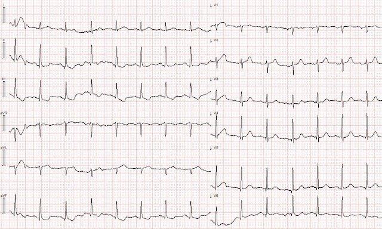
Tác giả: Magnus Nossen, với nhiều bình luận của Smith
Một bệnh nhân nam khoảng 50 tuổi có tiền sử đái tháo đường típ I và tăng huyết áp đến khoa cấp cứu (ED) vì đau ngực. Điện tâm đồ dưới đây được ghi lại.
- Bạn có lo ngại gì không (nếu có), và bạn sẽ xử trí bệnh nhân này thế nào?

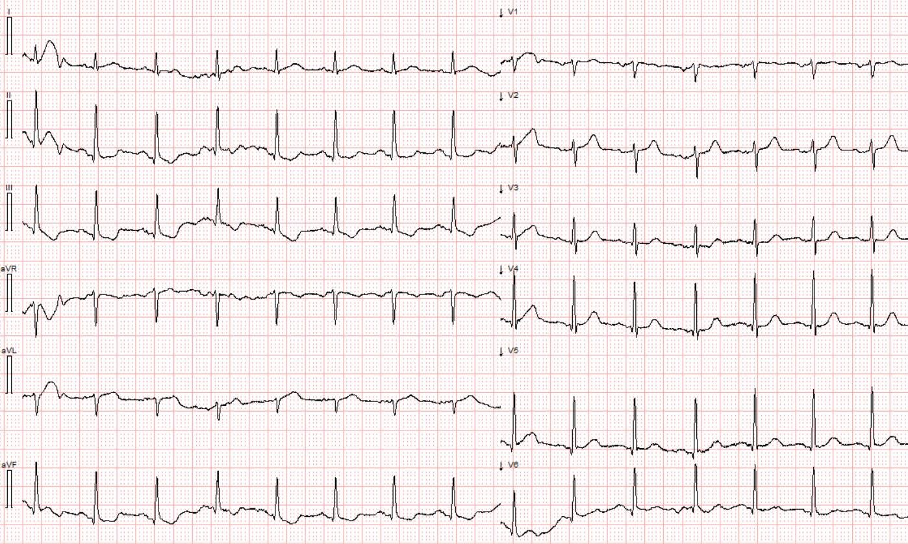
Điện tâm đồ #1 ghi lúc nhập viện
Tôi gửi bản ghi này cho Dr. Smith mà không kèm thông tin gì, và ông trả lời ngay lập tức: “SAF, tinh tế nhưng aVL thì không thể nhầm được.”
“SAF” nghĩa là dấu hiệu “Cờ Nam Phi” (South Africa Flag). Đây là dấu hiệu của tắc nhánh chéo thứ nhất (OMI). Xem bên dưới. Thực ra bạn không thể thấy SAF ở định dạng 6×2. Bạn sẽ thấy nó ở bên dưới sau khi chuyển sang định dạng 3×4.
Trước hết, bệnh nhân này có xác suất tiền nghiệm (pre-test probability) bị nhồi máu cơ tim rất cao vì ông có đái tháo đường típ I, tăng huyết áp, và nay đến viện vì đau ngực khởi phát cấp tính. Dù không có ST chênh lên đáng kể nào — điện tâm đồ này vẫn đủ để chẩn đoán OMI. Những người đọc điện tâm đồ giàu kinh nghiệm, được đào tạo để nhận diện OMI, sẽ không gặp khó khăn gì khi khẳng định với độ tin cậy cao rằng điện tâm đồ này phù hợp với nhồi máu cơ tim do tắc (occlusion myocardial infarction). Như ở nhiều ca OMI khác, các thay đổi đoạn ST rất tinh tế. Thay vì dựa vào biên độ thay đổi ST tuyệt đối và tiêu chuẩn dựa trên milimét — chính tổng hợp tất cả các dấu hiệu mới làm cho điện tâm đồ có giá trị chẩn đoán.
Vì điện tâm đồ không có ST chênh lên “đạt tiêu chuẩn chẩn đoán”, bệnh nhân này được nhập viện với chẩn đoán NSTEMI, nhưng chỉ sau khi troponin I lúc nhập viện trả về tăng ở mức 102ng/L (giá trị tham chiếu <34ng/L). Troponin I lặp lại sau 3 giờ là 429ng/L. Bệnh nhân được cho morphin để giảm đau; morphin làm giảm đau nhưng không làm hết đau. Morphin là một sai lầm khủng khiếp, trừ khi bạn đã quyết định chắc chắn đưa bệnh nhân vào phòng thông tim (cath lab).
“NSTEMI” hàm ý rằng bệnh nhân không cần can thiệp cấp cứu, ngay cả khi đó là OMI — tình trạng thực sự cần can thiệp cấp cứu (xem phần bàn luận dài bên dưới).
Tuy nhiên, trên thực tế, NSTEMI còn đau dai dẳng là một chỉ định can thiệp được đồng thuận rộng rãi và được guideline khuyến cáo, nhưng hiếm khi được tuân thủ (chỉ 6% số trường hợp, trong nghiên cứu duy nhất về vấn đề này).
_________
Tóm tắt nghiên cứu về morphin:
Bracey, A. Meyers HP. Smith SW. Wei L. Singer DD. Singer A. Association between opioid analgesia and delays to cardiac catheterization of patients with occlusion Myocardial Infarctions. Tạp chí Academic Emergency Medicine 27(S1): S220; tháng Năm 2020. Tóm tắt số 556. Kết quả chính: Bệnh nhân OMI STEMI âm tính (STEMI(-) OMI) 65 (23.9%) bệnh nhân được phát hiện có nhồi máu cơ tim do tắc (OMI) STEMI âm tính tại thời điểm thông tim. 45 bệnh nhân STEMI(-) OMI không dùng opioid trước thông tim có thời gian từ cửa đến bóng (door-to-balloon) là 75 phút, so với 684 phút ở 25 bệnh nhân STEMI(-) OMI có dùng opioid trước thông tim.
Hãy xem kỹ hơn điện tâm đồ lúc nhập viện. Điện tâm đồ cho thấy một dấu hiệu Cờ Nam Phi (SAF) rất tinh tế. Dấu hiệu SAF liên quan đến nhồi máu vùng bên cao, và thường do tắc nhánh chéo thứ nhất của LAD. Dưới đây, ở Hình 1, lá Cờ Nam Phi đã được chồng lên điện tâm đồ ban đầu của ca hôm nay.
Hình ảnh điện tâm đồ này đặc trưng bởi ST chênh lên ở các chuyển đạo I, aVL và V2, kèm ST chênh xuống ở chuyển đạo III. Trên điện tâm đồ hôm nay — các chuyển đạo thường có STE trong dấu hiệu SAF biểu hiện thay đổi thiếu máu cục bộ rõ ràng nhưng không có ST chênh lên rõ rệt. Chuyển đạo I trong ca của chúng ta có trôi đường nền (baseline wander) đáng kể — nhưng vài phức bộ QRS ở chuyển đạo này cho thấy rõ sóng T trông như tối cấp (hyperacute). Chuyển đạo aVL rất bệnh lý và rất đáng lo ngại, nếu không muốn nói là tự nó đã đủ chẩn đoán OMI. Chuyển đạo này cho thấy ST chênh lên dạng lõm (concave-up) rất ít và sóng T tối cấp, đầy đặn (khi so với điện tâm đồ trước đó). Chuyển đạo III có ST chênh xuống nhẹ và sóng T đảo ngược, là thay đổi soi gương (reciprocal) của sóng T tối cấp và thay đổi ST vùng bên cao ở aVL. Chuyển đạo V2 cho thấy một sóng T đối xứng trông như thiếu máu cục bộ — và các chuyển đạo trước tim còn lại có ST chênh xuống rất ít, trông như thiếu máu cục bộ.
Ở đây tôi đã chuyển định dạng điện tâm đồ từ 6×2 sang 3×4, định dạng mà nhiều người thấy dễ đọc hơn. Đây cũng là định dạng duy nhất cho thấy được Cờ Nam Phi!! Hình 1: Điện tâm đồ #1 được chồng hình Cờ Nam Phi
Dấu hiệu SAF được xem là một dấu hiệu điện tâm đồ không thường gặp nhưng quan trọng, vì tắc vùng bên cao tương đối hiếm và hình ảnh điện tâm đồ này dễ bị bỏ sót do các thay đổi đoạn ST nằm ở những chuyển đạo không liền kề (non-contiguous).
Các nhân viên y tế trong ca này đã không nhận ra những dấu hiệu trên. Sáng hôm sau, điện tâm đồ dưới đây được ghi sau khi troponin I độ nhạy cao trả về ở mức vừa trên 14.000 ng/L. Như ta thấy, có mất sóng R ở các chuyển đạo V2 và aVL. Các chuyển đạo I, aVL và V2 xuất hiện sóng Q bệnh lý mới.
Điện tâm đồ #2 ghi 13 giờ sau khi nhập viện
Cuối cùng bệnh nhân cũng được chụp mạch vành.
Việc này được thực hiện gần 24 giờ sau khi khởi phát triệu chứng, và giá trị tiên lượng của PCI ở bệnh nhân bị tắc liên tục gần 24 giờ là hạn chế. Khi thông tim, chỗ tắc nhánh chéo thứ 1 của LAD đã được mở thông và đặt stent.
Mô hình AI điện tâm đồ PMCardio Queen of hearts đã không được sử dụng trong xử trí bệnh nhân này. Nếu mô hình AI được áp dụng trong chăm sóc bệnh nhân này — nó đã nhận diện điện tâm đồ đầu tiên là OMI, giúp rút ngắn đáng kể thời gian từ triệu chứng đến bóng (symptom-to-balloon).
Dưới đây là kết quả đọc của Queen of hearts và tính năng giải thích (explainability). Như bạn thấy, tính năng giải thích làm nổi bật các thay đổi điện tâm đồ theo kiểu hình SAF.
Queen of Hearts gán nhãn “STEMI/tương đương STEMI” cho bất cứ trường hợp nào mà mô hình nhận ra là tắc động mạch vành cấp (OMI).

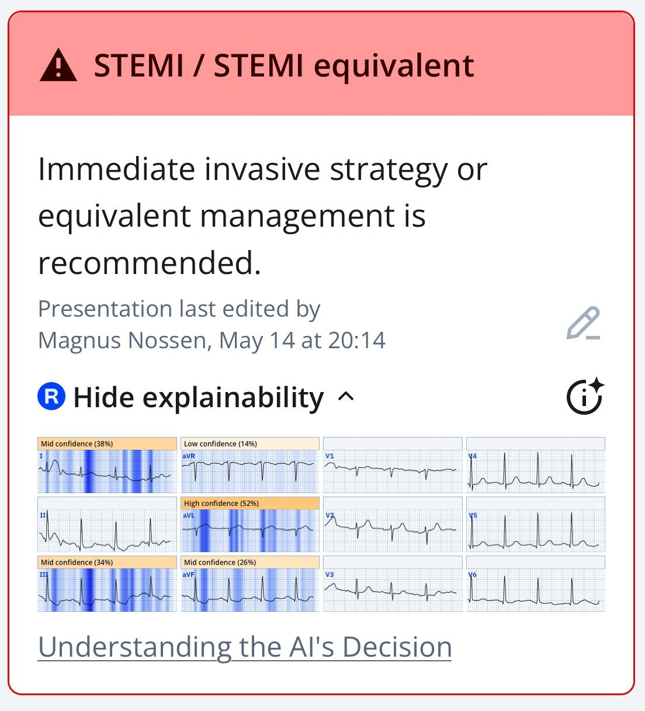

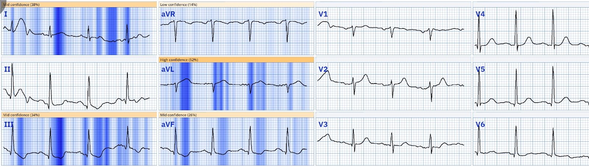
Mới: PMcardio for Individuals App 3.0 nay đã có mô hình Queen of Hearts mới nhất và khả năng giải thích của AI (bản đồ nhiệt màu xanh)! Tải ngay cho iOS hoặc Android.
Những điểm cần học:
- Đau ngực khởi phát đột ngột ở bệnh nhân có xác suất tiền nghiệm cao bị hội chứng vành cấp (ACS) là thiếu máu cơ tim cho đến khi chứng minh được điều ngược lại.
- Tắc động mạch vành cấp cần chụp mạch vành và can thiệp ngay lập tức.
- Thay đổi điện tâm đồ trong OMI có thể rất tinh tế. Trong trường hợp như vậy, nhất là khi kết hợp với sự phân bố chuyển đạo không điển hình — các thay đổi thiếu máu cục bộ cấp có thể khó nhận ra.
Những điểm cần học quan trọng nhất của Smith:
1. “NSTEMI” là một chẩn đoán vô giá trị, bao gồm cả những bệnh nhân cần (OMI) lẫn những bệnh nhân không cần (Non-OMI, hay NOMI) can thiệp cấp cứu.
2. Không bao giờ cho morphin trừ khi bạn đã quyết định chắc chắn đưa bệnh nhân vào phòng thông tim
3. Trái với niềm tin phổ biến, bệnh nhân “NSTEMI” thực sự được hưởng lợi từ can thiệp cấp cứu. Xem các thử nghiệm được tóm tắt bên dưới. Cho rằng họ không được lợi là một ngộ nhận, một ngộ nhận được lan truyền vì nhiều thử nghiệm đã loại trừ bệnh nhân có triệu chứng dai dẳng và vì “sớm” không thực sự sớm, mà là 5-16 giờ sau khi đưa vào thử nghiệm, nói chung tức là 7-18 giờ sau khi đến khoa cấp cứu. Như vậy là quá muộn để có bất kỳ lợi ích nào.
4. “NSTEMI” thường được xác định bằng một điện tâm đồ “không chẩn đoán” và troponin tăng. Khi NSTEMI là OMI (chứ không phải NOMI), phần lớn các điện tâm đồ như vậy có thể được chuyên gia hoặc Queen of Hearts nhận ra là OMI. Khi không được nhận ra, chẩn đoán dựa vào troponin đến quá muộn để tạo ra khác biệt LỚN, và vì vậy nhiều thử nghiệm trong số này cho kết quả âm tính.
Chúng ta biết rằng lợi ích của tái tưới máu giảm nhanh chóng chỉ với 2 giờ chậm trễ:

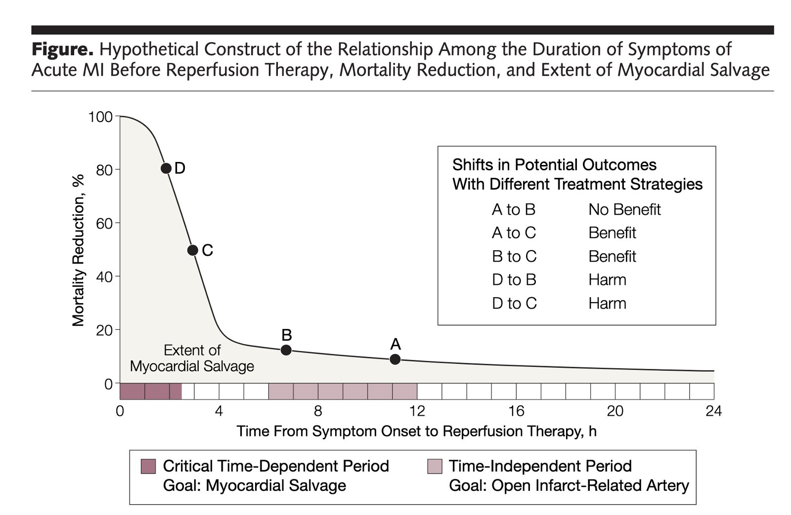
Gersh BJ, Stone GW, White HD, Holmes DR Jr. Pharmacological facilitation of primary percutaneous coronary intervention for acute myocardial infarction: is the slope of the curve the shape of the future? Tạp chí JAMA [Internet] 2005;293(8):979–86
Các thử nghiệm NSTEMI: PCI “sớm” so với muộn trong NSTEMI
Dưới đây là bảng tóm tắt tất cả các thử nghiệm:
https://docs.google.com/document/d/105SJvgOeoYnpSWDxA8_03ioNKUepwhaRs892rwRw5Ec/edit?usp=sharing (bảng tóm tắt tất cả các thử nghiệm NSTEMI trên Google Docs)
Tóm tắt nhanh:

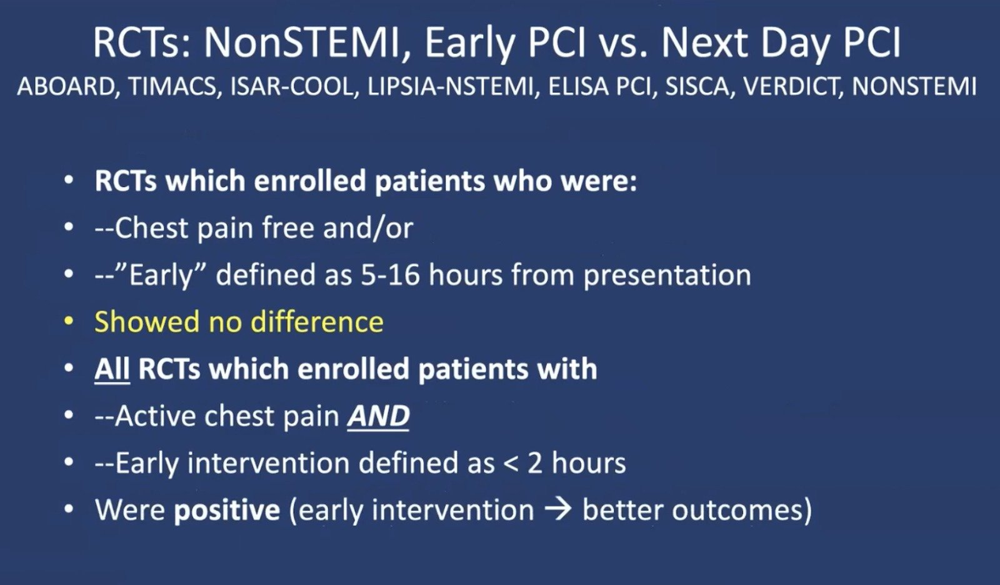
Từng thử nghiệm
TIMACS (Timing of Intervention in ACS — Thời điểm can thiệp trong ACS)
Mehta và cs., tạp chí New England Journal
Năm 2009
•N= 3,000 bệnh nhân NonSTEMI được phân ngẫu nhiên vào nhóm PCI sớm hoặc thường quy
•Kết quả: Không khác biệt về tử vong/nhồi máu cơ tim/đột quỵ
•Điểm GRACE > 140: kết cục tốt hơn với PCI sớm
•Can thiệp “sớm” thực ra không sớm
–Trung vị 16 so với 52 giờ
•Phương pháp: không đề cập đến thiếu máu cục bộ kháng trị
•Trao đổi cá nhân với Dr. Mehta
–“Tôi không tin là các nhà nghiên cứu lại đưa những bệnh nhân đang còn đau ngực vào thử nghiệm ACS không ST chênh lên (Non-STE-ACS) này.”
Thử nghiệm VERDICT (Early Versus Standard Care Invasive Examination and Treatment of Patients with Non-ST-Segment Elevation Acute Coronary Syndrome — Thăm dò và điều trị xâm lấn sớm so với chăm sóc tiêu chuẩn ở bệnh nhân hội chứng vành cấp không ST chênh lên)
Kofoed và cs., tạp chí Circulation 2018
N=2147 bệnh nhân NSTEMI (tiêu chuẩn loại trừ ở bên dưới), được phân ngẫu nhiên vào nhóm chụp mạch “rất sớm” (4.7 giờ) so với “tiêu chuẩn” (62 giờ)
88% so với 84% ở mỗi nhóm được tái thông mạch vành
thời gian theo dõi trung vị 4.3 năm
Tiêu chí đánh giá chính: kết hợp tử vong do mọi nguyên nhân, nhồi máu cơ tim tái phát không tử vong, nhập viện vì thiếu máu cơ tim kháng trị, nhập viện vì suy tim
– Tất cả bệnh nhân: 27.5% ở nhóm rất sớm, 29.5% ở nhóm chăm sóc tiêu chuẩn, không khác biệt
– Bệnh nhân có GRACE>140:
Điểm GRACE > 140 được xác nhận trong thử nghiệm VERDICT
4.7 so với 62 giờ, loại trừ bệnh nhân có triệu chứng dai dẳng.
Kofoed KF, Kelbæk H, Hansen PR, Torp-Pedersen C. Correction to: Early Versus Standard Care Invasive Examination and Treatment of Patients With Non-ST-Segment Elevation Acute Coronary Syndrome: VERDICT Randomized Controlled Trial. Tạp chí Circulation [Internet] 2018;138(24):e750. Truy cập tại: http://dx.doi.org/10.1161/CIR.0000000000000640
Tiêu chuẩn loại trừ gồm: có thai, bệnh nhân không có khả năng hiểu thông tin về thử nghiệm, có chỉ định chụp mạch vành xâm lấn (ICA) cấp (NSTE-ACS nguy cơ rất cao,12 bao gồm thiếu máu cục bộ đang diễn ra dù đã truyền nitroglycerin tĩnh mạch, mất ổn định huyết động hoặc mất ổn định điện học, suy tim cấp, biến chứng cơ học, hoặc ngừng tim), thời gian sống còn dự kiến
Thử nghiệm RIDDLE-NSTEMI
Milosevic A, Vasiljevic-Pokrjcic Z, Milasinovic D, và cs. Immediate Versus Delayed Invasive Intervention for Non-STEMI Patients. Tạp chí Journal of the American College of Cardiology Cardiovasc Interv 2016;9(6):541–9.

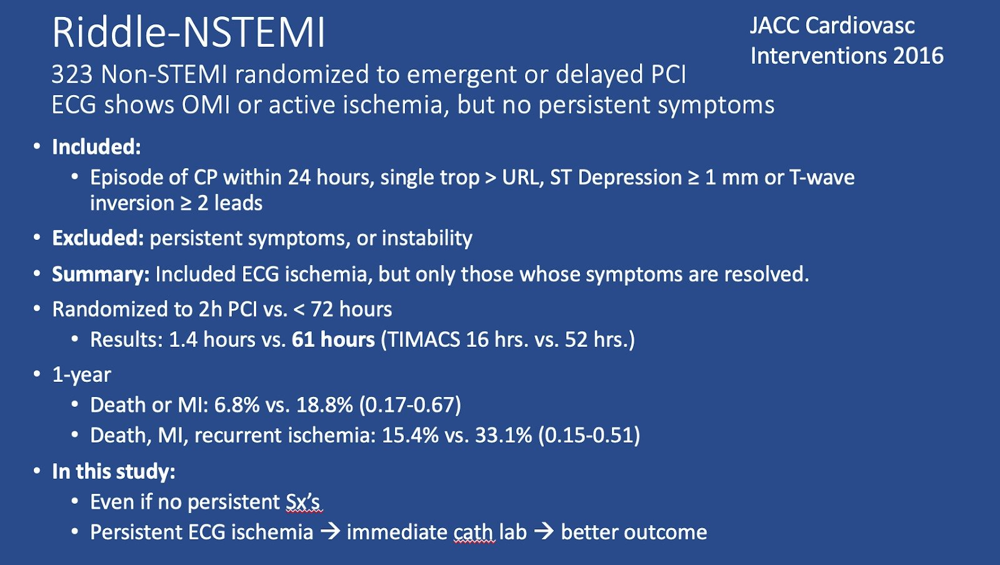
Thử nghiệm ABOARD* (n=360), Montalescot, JAMA 302:947; 2009
– 1 so với 20 giờ, không khác biệt, chủ yếu dùng LMWH, không phân tích điện tâm đồ chuyên sâu
– Loại trừ bệnh nhân có triệu chứng kháng trị
Thử nghiệm TIMACS,* Mehta, NEJM 360:2165; 2009, 3000 bệnh nhân
– Không khác biệt, trừ bệnh nhân có điểm GRACE trong viện > 140 (Sớm thì tốt hơn)
– Sớm nhưng không thực sự sớm (16 so với 50 giờ)
– Loại trừ thiếu máu cục bộ kháng trị (trao đổi cá nhân, Mehta)
Thử nghiệm ISAR-COOL,* JAMA 290:1593, 2003; n = 410
– Sớm tốt hơn (nhưng 2.4 giờ so với 86 giờ); có dùng tirofiban và clopidogrel 600
– Tử vong hoặc nhồi máu cơ tim diện rộng: 11.6% so với 5.9%;
– Trước PCI: 3 tử vong và 10 nhồi máu cơ tim diện rộng so với 0 tử vong và 1 nhồi máu cơ tim nhỏ; Sau PCI: 11 nhồi máu cơ tim ở cả hai nhóm
Thử nghiệm LIPSIA-NSTEMI, Thiele, tạp chí Eur Ht. Journal 2011, n = 400
– 1.1 so với 18.6 giờ. Tử vong hoặc nhồi máu cơ tim: 21% (trì hoãn) so với 16% (ngay lập tức), p = 0.17, lực mẫu thấp
– Loại trừ thiếu máu cục bộ kháng trị
Thử nghiệm ELISA PCI, van’t Hof, Eur Ht J 24:1401; 2003. N= 220. Nhóm trì hoãn luôn được dùng tirofiban. Tất cả đều dùng LMWH.
– 6 so với 50 giờ. Mạch máu thông: 66% (muộn) so với 82% (p = 0.05)
Thử nghiệm Sisca: Reuter P. Int J Cardiol 182:414; 2015. Không loại trừ bệnh nhân có triệu chứng dai dẳng
– Can thiệp xâm lấn sớm tốt hơn hẳn. Trung vị 2.8 giờ (1.4-4.7)
Thử nghiệm Verdict (2018): Nhóm sớm có trung vị 4.7 giờ. Triệu chứng đang diễn ra là tiêu chuẩn loại trừ
Thời điểm tối ưu: trong vòng 24 giờ so với 24-72 giờ. Sớm tốt hơn. Nhiều nghiên cứu cho thấy 24 giờ tốt hơn 72 giờ.
Phân tích gộp. Katritsis Eur Ht. J 32:32; 2011 (loại trừ LIPSIA-NSTEMI)
– Ở các trường hợp không khẩn cấp, PCI sớm làm giảm thiếu máu cục bộ tái phát và rút ngắn thời gian nằm viện
Tóm tắt: Thông tim nhanh/khẩn cấp cho thiếu máu cục bộ nguy cơ cao, không ổn định hoặc kháng trị.

===================================
BÌNH LUẬN CỦA TÔI, bởi KEN GRAUER, MD (21/5/2025):
===================================
Bài hôm nay của Dr. Nossen quả thật tinh tế. Điều khiến việc diễn giải điện tâm đồ ban đầu hôm nay càng khó khăn hơn — là “sự cố kỹ thuật” (technical misadventure) gồm nhiễu cộng với trôi đường nền lẫn trong bản ghi này (Để rõ ràng — tôi đã sao lại điện tâm đồ ban đầu này ở Hình 1.)
- Bình luận của tôi dưới đây tập trung vào việc mài giũa khả năng của các nhân viên y tế cấp cứu trong việc gỡ rối hiệu ứng ngụy trang của những sự cố kỹ thuật này — vốn có thể che khuất và giấu đi những dấu hiệu điện tâm đồ tinh tế-nhưng-thiết yếu trên điện tâm đồ #1.
Chúng ta nên xem những nhát nào?
Có rất nhiều định dạng điện tâm đồ khác nhau — mỗi định dạng có ưu và nhược điểm riêng.
- Ưu điểm của định dạng ghi thấy ở Hình 1 — là chúng ta thấy được nhiều nhát hơn ở mỗi chuyển đạo (tức là, tới 5 giây ở mỗi chuyển đạo trong 12 chuyển đạo — thay vì các đoạn 2,5 giây thông thường khi định dạng điện tâm đồ ghi 4 nhóm, mỗi nhóm 3 chuyển đạo đồng thời).
- “Mắt” tôi đã quen với định dạng 4 nhóm 3 chuyển đạo, trong đó một dải nhịp chuyển đạo II dài 10 giây, ghi đồng thời, xuất hiện bên dưới bản ghi 12 chuyển đạo. Tôi ưa chuộng định dạng này vì thấy dễ đánh giá nhanh và so sánh các dấu hiệu ở từng chuyển đạo trong 12 chuyển đạo hơn.
- NHƯNG — Chẳng phải có một số chuyển đạo chi ở Hình 1 biểu hiện mức độ nhiễu và trôi đường nền đáng kể, gây xao nhãng hay sao?

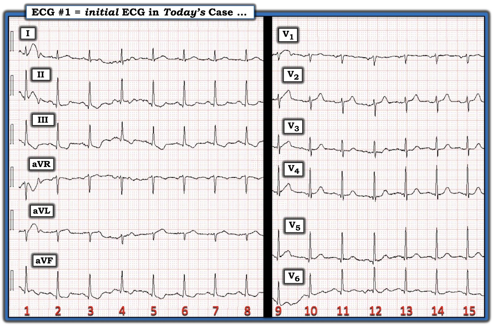
===============================
Các dấu hiệu điện tâm đồ MẤU CHỐT:
Theo phần bàn luận của Dr. Nossen ở trên — bệnh nhân hôm nay là một người đàn ông khoảng 50 tuổi, đến khoa cấp cứu (ED) vì CP mới xuất hiện (Chest Pain — đau ngực).
- Với tôi — dấu hiệu MẤU CHỐT đã thu hút “mắt” tôi (như thấy ở Hình 2) — là đoạn ST của 4 nhát nằm trong hình chữ nhật ĐỎ ở chuyển đạo aVL (các nhát #5,6,7,8). Sự xác nhận rằng hình ảnh ST thẳng đuỗn của 4 nhát này thực sự là một dấu hiệu tối cấp — đến từ ST chênh xuống soi gương ở các chuyển đạo thành dưới (mũi tên XANH ở các chuyển đạo II,III,aVF).
- Thừa nhận: Tôi đã có nhận định khác về đánh giá sóng ST-T ở chuyển đạo aVL nếu điện tâm đồ được đưa cho tôi xem chỉ ghi các đoạn 2,5 giây, tức là dùng 4 nhát đầu tiên ở chuyển đạo aVL.
Các dấu hiệu ở chuyển đạo trước tim trên Hình 2 còn tinh tế hơn nữa.
- Như Dr. Nossen đã nêu — không có ST chênh lên ở chuyển đạo V2. Nhưng, khi đã có sóng ST-T bất thường rõ (tối cấp) ở chuyển đạo aVL — sóng T ở chuyển đạo V2 trông cao không tương xứng, và rõ ràng “béo” ở đỉnh hơn so với mong đợi khi xét kích thước QRS khá khiêm tốn ở chuyển đạo này.
- Cũng không có ST chênh xuống rõ rệt ở các chuyển đạo trước tim còn lại. Thay vào đó, có ST thẳng đuỗn ở các chuyển đạo V3,V4 (mũi tên XANH) kế cận, và ở mức độ ít hơn ở các chuyển đạo V5,V6.

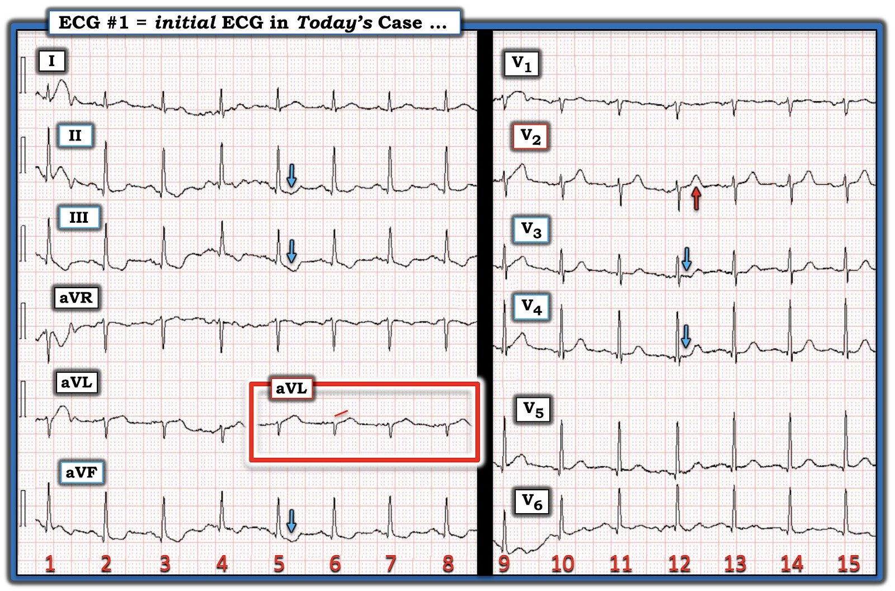
===============================
NẾU điện tâm đồ ban đầu như ở Hình 3:
Để minh họa rõ hơn tác động gây xao nhãng tiềm tàng của các sự cố kỹ thuật hôm nay — Hãy nhìn Hình 3 — trong đó tôi đã rút ngắn độ dài bản ghi của mỗi chuyển đạo (cho thấy các nhát #1,2,3,4 ghi đồng thời ở các chuyển đạo chi — và các nhát #9,10,11 ở các chuyển đạo trước tim).
Nếu bản ghi 12 chuyển đạo của điện tâm đồ ban đầu hôm nay chỉ dùng các phức bộ thấy ở Hình 3:
- Tôi chắc chắn đã bị xao nhãng bởi nhiễu và trôi đường nền ở các chuyển đạo chi. Sóng ST-T ở chuyển đạo aVL sẽ biến thiên quá nhiều khiến tôi không thể nhận ra bất kỳ bất thường rõ ràng nào.
- ST chênh xuống có hiện diện ở các chuyển đạo thành dưới — nhưng một lần nữa, có quá nhiều biến thiên do nhiễu và trôi đường nền — đến mức tôi không thể tự tin nghi ngờ một OMI cấp.
- Tôi cũng sẽ cho rằng chuyển đạo V2 không đủ để kết luận — với nhiễu làm biến dạng rõ sóng ST-T thứ 1 ở chuyển đạo này — và sóng ST-T thứ 3 trông gần như bình thường.
- Tôi sẽ không nhận thấy các chuyển đạo V3,V4,V5,V6 cho thấy điều gì có tính kết luận.

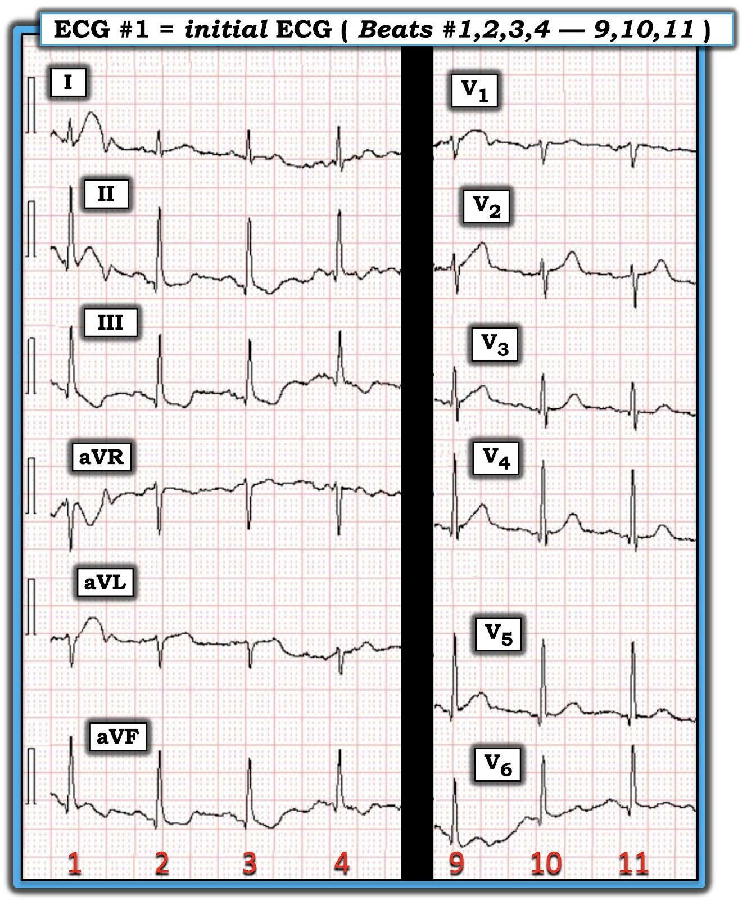
===============================
NẾU điện tâm đồ ban đầu như ở Hình 4:
Mặt khác — tôi sẽ đi đến một đánh giá hoàn toàn khác nếu điện tâm đồ ban đầu hôm nay trông như Hình 4 (trong đó bản ghi của mỗi chuyển đạo được rút ngắn — cho thấy các nhát #5,6,7,8 ghi đồng thời ở các chuyển đạo chi — và các nhát #12,13,14,15 ở các chuyển đạo trước tim).
- Ở bệnh nhân hôm nay đến viện vì CP mới xuất hiện — “mắt” tôi sẽ lập tức bị thu hút ở Hình 4 bởi sóng ST-T bất thường rõ (tối cấp) thấy nhất quán ở cả 4 nhát trong chuyển đạo aVL.
- Trong bối cảnh này — tôi cũng sẽ diễn giải sóng T nhỏ nhưng rõ ràng rộng-hơn-mong-đợi ở chuyển đạo I là một thay đổi tối cấp.
- Sự xác nhận cho những thay đổi tối cấp ở các chuyển đạo bên cao này — rõ ràng sẽ đến từ hình ảnh sóng ST-T chênh xuống nhất quán ở từng chuyển đạo thành dưới.
- Với những bất thường sóng ST-T nêu trên ở 5 chuyển đạo chi — tôi sẽ diễn giải sóng T “đầy đặn” hơn mong đợi ở chuyển đạo V2 là một thay đổi tối cấp — được củng cố bởi hình ảnh ST dẹt bất thường rõ ở các chuyển đạo V3,V4 (và ở mức độ ít hơn ở V5,V6).
- LƯU Ý: Về cơ bản không có trôi đường nền ở Hình 4. Nhiễu trên bản ghi này là tối thiểu — và không làm giảm độ chính xác khi diễn giải bản ghi này!

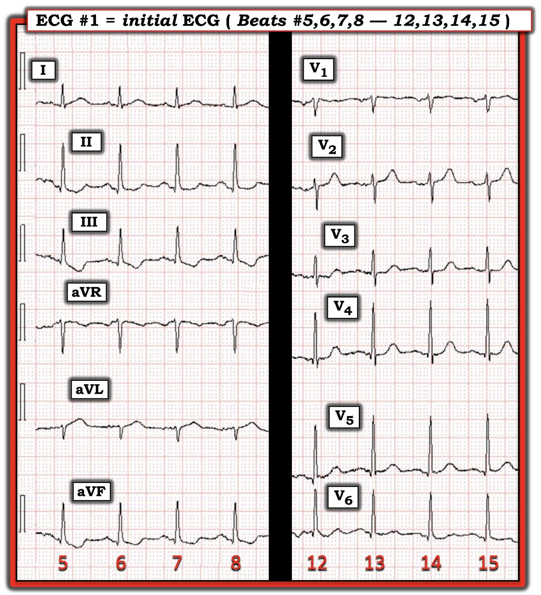
===============================
Vì sao tôi ưa chuộng định dạng 4 nhóm 3 chuyển đạo:
Ở Hình 5 — tôi đã “dựng lại” điện tâm đồ ban đầu hôm nay bằng cách chọn từ Hình 1 4 nhát liên tiếp ở mỗi chuyển đạo trong 12 chuyển đạo, sao cho về cơ bản không có nhiễu hay trôi đường nền. Chẳng phải diễn giải điện tâm đồ này ở Hình 5 dễ hơn nhiều hay sao?
- Chúng tôi định kỳ ôn lại các ví dụ về dấu hiệu “Cờ Nam Phi” (South African Flag Sign) — trong đó hình ảnh gồm: i) ST chênh lên ở các chuyển đạo I,aVL,V2; + ii) ST chênh xuống soi gương ở chuyển đạo III; — nhưng — iii) Không có ST chênh lên ở bất kỳ chuyển đạo trước tim nào ngoại trừ chuyển đạo V2 — chỉ điểm tắc cấp hoặc là nhánh chéo thứ 1 hoặc nhánh chéo (Diagonal) thứ 2 của LAD (Xem Bình luận của tôi trong bài ngày 18 tháng Một năm 2025, cùng nhiều bài khác).
- Mặc dù điện tâm đồ ban đầu hôm nay thiếu mức ST chênh lên cần thiết để thỏa mãn đầy đủ tiêu chuẩn của dấu hiệu Cờ Nam Phi — các sóng T tối cấp ở các chuyển đạo I,aVL,V2 — đi kèm ST chênh xuống ở chuyển đạo III và ST dẹt ở các chuyển đạo từ V3 đến V6 gợi ý mạnh mẽ nhánh chéo thứ 1 hoặc thứ 2 là động mạch “thủ phạm”. Điều này đã được xác nhận khi thông tim ở ca hôm nay.

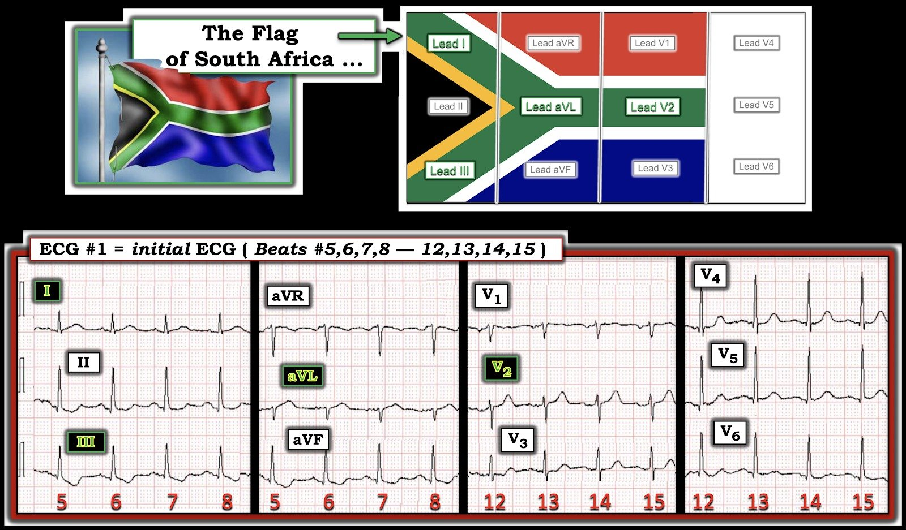
===============================
BÀI HỌC rút ra từ ca hôm nay:
- Hãy cảnh giác với các “sự cố kỹ thuật” như nhiễu và trôi đường nền — vốn có thể khiến những dấu hiệu điện tâm đồ tinh tế-nhưng-thiết yếu gần như không thể nhận ra.
- Theo kinh nghiệm của tôi — một trong những thiếu sót thường gặp nhất, ngay cả ở các bác sĩ lâm sàng giàu kinh nghiệm, là không ghi lại điện tâm đồ ngay lập tức khi run, bệnh nhân cử động quá nhiều, thở gắng sức, dây điện cực lỏng, hoặc các yếu tố gây nhiễu khác cản trở việc diễn giải chính xác ở bệnh nhân có CP mới xuất hiện. Nếu quyết định lâm sàng phụ thuộc vào việc xác định một biến cố tim cấp có đang diễn ra hay không — Hãy cố gắng hết sức để hạn chế các yếu tố gây nhiễu — và hãy ghi lại điện tâm đồ ngay lập tức!
- T.B. (P.S.): Có thể xem nhanh nhiều ví dụ về “Sự cố” kỹ thuật bằng cách bấm vào mục thứ 5 trong Menu phía dưới ở ĐẦU mỗi trang của Dr. Smith’s ECG Blog (BẤM VÀO ĐÂY).